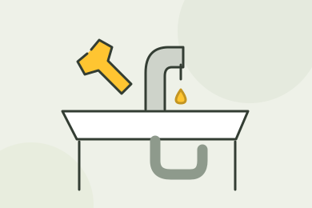
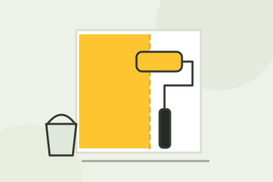
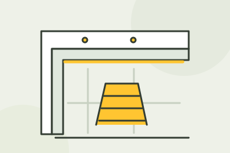
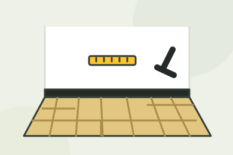
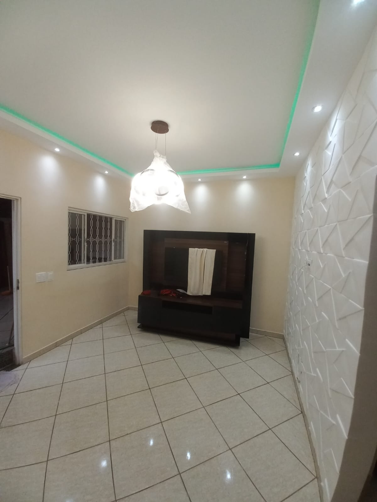

Mostre o que precisa.
Envie fotos ou um vídeo pelo WhatsApp. Conte o problema e seu bairro.
MARIDO DE ALUGUEL NO RIO DE JANEIRO
Torneira vazando, luminária para instalar ou TV para fixar? A Mestre dos Reparos cuida das instalações e dos pequenos reparos da sua casa.
Pedir orçamento no WhatsAppEnvie uma foto do serviço e informe seu bairro.
Conte tudo o que precisa resolver.
Combine o serviço, o valor e os materiais.
Consulte a disponibilidade para seu bairro.
O QUE PRECISA DE UM REPARO AÍ?
Escolha o serviço e abra uma conversa com o pedido já preenchido. Pode mandar sua lista completa também.
Instalação de luminárias, lustres e pendentes. Troca de tomadas e interruptores.
Pedir orçamento ↗
Troca de torneiras, sifões e metais. Avaliação e correção de pequenos vazamentos.
Pedir orçamento ↗Instalação de suportes de TV, prateleiras, espelhos, quadros e acessórios.
Pedir orçamento ↗
Pintura de paredes e tetos, correção de trincas e retoques no acabamento.
Pedir orçamento ↗
Sancas, rebaixamento e revestimentos decorativos para renovar o ambiente.
Pedir orçamento ↗
Instalação de pisos laminados, vinílicos e rodapés. Consulte seu projeto.
Pedir orçamento ↗DA SUA LISTA PARA A NOSSA AGENDA
Envie fotos ou um vídeo pelo WhatsApp. Conte o problema e seu bairro.
Receba a avaliação e alinhe escopo, materiais, valor e data do atendimento.
Com o serviço aprovado, é hora de executar os reparos combinados no seu imóvel.
DO PORTFÓLIO DA MESTRE DOS REPAROS
Iluminação, gesso e acabamentos em ambientes apresentados no nosso portfólio. Converse com a equipe sobre seu projeto.


PERTINHO DO SEU REPARO
Atendemos casas e apartamentos com agendamento. Informe seu bairro para confirmar a cobertura e consultar a agenda.
Consultar atendimento no meu bairro ↗ANTES DE CHAMAR
Precisa de mais alguma informação?
Fale com a equipe ↗
É o profissional que resolve instalações e reparos do dia a dia do imóvel. Aqui você pode solicitar serviços elétricos, hidráulicos, fixações, pintura e acabamentos. O escopo é confirmado na avaliação.
O valor depende do tipo de reparo, da quantidade de itens, dos materiais e do local. Envie fotos e seu bairro pelo WhatsApp para solicitar uma avaliação. Combine os valores antes de aprovar a execução.
Pode enviar sua lista completa. A equipe avalia quais serviços podem ser realizados juntos e combina o tempo e os materiais necessários.
Depende do serviço. Antes de comprar, envie fotos do que precisa resolver para alinhar com a equipe os materiais e as especificações.
O atendimento depende da disponibilidade da agenda e da região. Consulte pelo WhatsApp para verificar as próximas datas.
CHEGA DE DEIXAR PARA DEPOIS
Conte o que precisa. Vamos dar o primeiro passo para tirar essas pendências da sua lista.